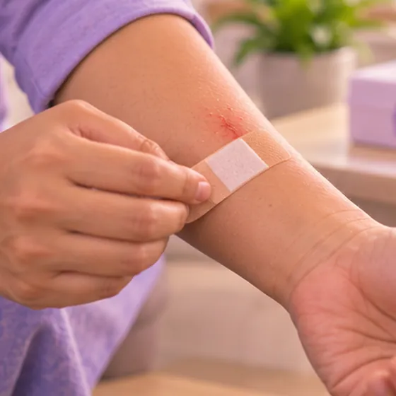

Jangkitan bakteria anaerob
Jangkitan oleh bakteria yang membiak di tempat kurang oksigen, seperti luka dalam atau abses
Apa itu
Bakteria ini hidup tanpa bahaya di mulut dan usus, tetapi boleh menyebabkan jangkitan pada luka dalam, abses atau tisu yang kurang bekalan darah.
- Luka, mulut, usus atau perut
- Selepas pembedahan atau kecederaan
- Demam, sakit, bau busuk
- Jumpa doktor
- Doktor keluarga, pakar penyakit berjangkit atau pakar bedah
- Biasa pada
- Orang selepas pembedahan atau kecederaan dalam; pesakit diabetes atau daya tahan lemah
- Berjangkit
- Biasanya tidak berjangkit antara orang
- Perjalanan
- Perlu doktor; selalunya ubat dan kadang-kadang nanah perlu disedut keluar
Tanda biasa

DemamDemam
Tanda-tanda lain
- Sakit, bengkak dan rasa panas di dalam atau sekeliling luka
- Nanah atau cecair berbau busuk
- Abses, iaitu ketulan sakit yang penuh nanah
Mengapa ia berlaku
- Bakteria sedia ada di mulut atau usus masuk ke luka dalam atau tempat pembedahan
- Tisu mati atau bekalan darah yang kurang di sesuatu kawasan
- Diabetes atau daya tahan badan yang lemah
- Jangkitan gigi, gigitan, atau masalah usus dan perut
Jumpa doktor dahulu jika
- Demam tinggi dengan degupan jantung laju, keliru atau rasa sangat lemah: hubungi 999
- Kulit bertukar gelap, melepuh atau berbunyi bila ditekan: pergi ke hospital segera
- Kemerahan atau sakit yang merebak dengan cepat
- Sakit perut yang teruk, atau bengkak di muka atau leher dengan sukar menelan
- Luka yang berbau busuk atau mengeluarkan nanah
Jika mana-mana berkenaan, sila jumpa doktor sebelum sesi.
Halaman ini ialah maklumat am. Sila terus mengambil ubat biasa anda dan terus berjumpa doktor.
Teruskan mengambil ubat biasa anda dan terus berjumpa doktor. Sesi kami ialah sokongan lembut dan tidak menggantikan rawatan perubatan.
Menjaga diri

Jumpa doktor untuk pemeriksaanSusulan perubatan berkala 
Pastikan luka bersih dan bertutupPenjagaan luka
Lebih banyak cara menjaga diri
- Ambil ubat yang diberi doktor tepat seperti diarahkan; tanya doktor atau ahli farmasi jika tidak pasti
- Kawal gula darah dengan baik jika anda menghidap diabetes
Beritahu ahli terapi anda
- Demam atau jangkitan aktif
- Kulit luka, merah atau sakit
- Diabetes atau deria kulit berkurang
- Ubat pencair darah
Ahli terapi anda akan menyemaknya bersama anda sebelum bermula.
Keadaan berkaitan
Rujukan: General information based on public health sources such as Mayo Clinic, NHS, Cleveland Clinic and NCBI StatPearls.
Halaman dikemas kini: 2026-10-31